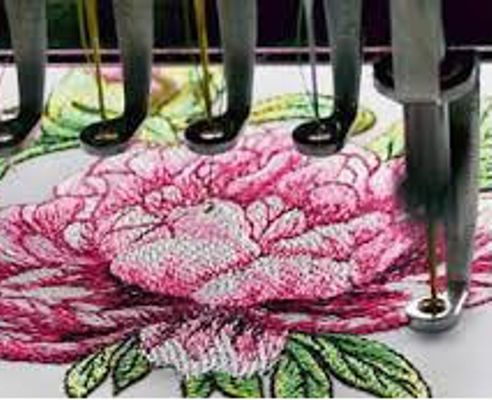

- Профессиональные вышивальные машины
- На профессиональных вышивальных машинах устанавливается несколько головок и несколько игл (от 1 до 24), что позволяет одновременно отшивать несколько изделий, а также большого размера пяльцы. У таких машин высокая скорость работы, а их стоимость зависит от степени автоматизации и возможностей оборудования и может находиться в пределах от 3 до 100 тысяч долларов. Одними из самых распространенных машин, имеющих высокое качество вышивки, являются машины TAJIMA -производит машины с 1944 года, а первая много головочная машина выпущена в 1964 году и Barudan- вышивальные машины производятся с 1959 года. Эти две компании остаются лидерами во всем мире и на сегодняшний день.
- Бытовые вышивальные машины
- Чаще всего бытовые швейные машины используются для работы в небольших ателье и в домашних условиях, так как имеют низкую производительность — одновременно можно работать только с одним образцом и необходимо постоянное присутствие человека, сменяющего нить.
- Монограммные вышивальные машины.
- Монограммными вышивальными машинами называют машины с небольшими пяльцами (не более 120 x 120 мм) и упрощенными возможностями редактирования. Такое оборудование используется для работы с небольшими вышивками. К недостаткам монограммных вышивальных машин относят маленькие размеры экранов, а также обязательность применения специальных программ при работе со своими образцами, например, PE-DESIGN. Скорость работы таких машин в среднем составляет 400—600 стежков в минуту.
- Швейно-вышивальные комплексы.
- Швейно-вышивальные комплексы - это многофункциональные машины, разработанные по принципу "два в одном". В результате выполнения несложных и простых действий, а именно, снятия швейного стола и установки вышивального модуля, пользователь легко перейдёт от швейных работ непосредственно к вышиванию дизайна.